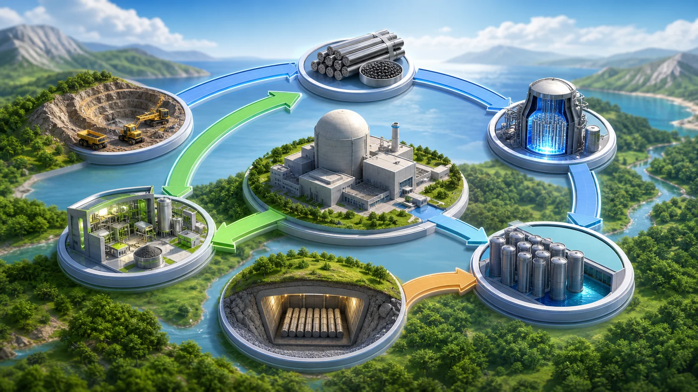
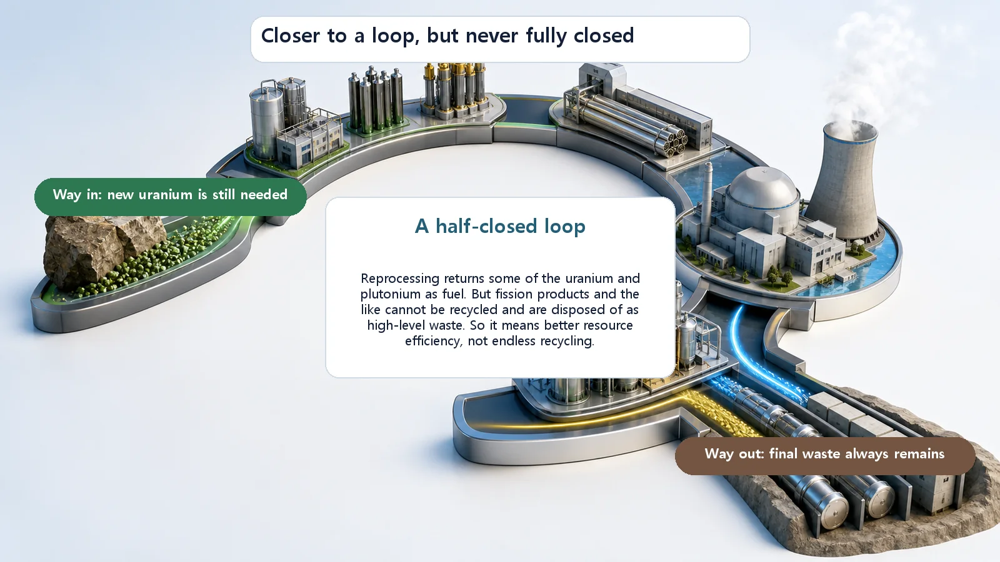

Long-Term Core Behavior & Fuel Cycle · 175
Used Up Doesn't Mean Over? — Seeing the Nuclear Fuel Cycle as a Circular Economy
Choose recycling and the fuel cycle starts to look like a loop, but new uranium still goes in and final waste still comes out.

Whether the nuclear fuel cycle works like a circular economy depends on its back end. Direct disposal (the open cycle) is really a straight line, while reprocessing and recycling (the closed cycle) bring part of the fuel back. Spent fuel is still about 95% uranium by weight, so the recycling view has a real basis, but fission products always remain as final waste and new uranium is still needed: it is a half-closed loop, not endless recycling.
Picture recycling day. You rinse an empty plastic bottle and drop it in the plastics bin; somewhere it gets shredded and becomes clothing, a bag, or another bottle. We call this kind of flow a "circular economy": instead of using something once and throwing it away, reuse as much as possible. Does fuel used in a reactor have a "next life" too? Let's tie the whole story of nuclear fuel together and look at the nuclear fuel cycle through the lens of the circular economy.
An economy that throws away, and one that brings back
The model we've long been used to is the "linear economy": extract, make, dispose, a straight line running in one direction. A circular economy tries to join the end of that line back to the start: collect what has been used, recover the useful parts and send them back into the flow. It bends the straight line into a loop.
How well something can be looped differs by material: glass circulates well, paper weakens after a few rounds, some things barely loop at all. Where does nuclear fuel fall? First, the path it travels.
The fuel's path, in three stretches
The nuclear fuel cycle is, literally, the whole sequence of industrial steps nuclear fuel goes through, from uranium coming out of the ground, through the reactor, to how it is finally dealt with. It splits into three stretches.
First, before the reactor (the front end). Uranium ore is mined and refined (mining and milling), chemically converted into a gas that can be enriched (conversion), the share of a particular uranium, U-235, is raised (enrichment), and finally it is formed into pellets and rods that can go into a reactor (fuel fabrication). A quick word on enrichment, which is widely misunderstood: it doesn't make uranium "stronger." It only adjusts the ratio between two siblings, U-235 and U-238. U-235, about 0.7% in nature, is raised slightly to roughly 3–5% for light water reactor fuel.
Second, the use stage, where the reactor produces energy. U-235 splits and releases heat, some U-238 turns into plutonium that adds energy of its own, and fragments called fission products build up.
Third, after use (the back end). Spent fuel taken out of the reactor is still hot and highly radioactive, so it is cooled calmly for a while in water and in storage casks. And right here, in the back end, the road splits in two. That fork is the heart of today's story.
![Aerial landscape with the nuclear fuel cycle drawn as a large curved path: front end from mining and milling through conversion and enrichment to fuel fabrication, the use stage at the reactor, and the back end where after cooling and storage the path leads to reprocessing and recycling or down into direct disposal; small labels note that spent fuel cools in water and then in storage casks, and that in a closed cycle recovered uranium and plutonium return as MOX fuel; a badge saying whether the cycle is a real loop depends on the back-end choice](../../assets/images/theory/175-fuel-cycle-circular-economy/fig1-fuel-cycle-loop.webp)
The fork: dispose of it in a straight line, or bend it back?
The first road is the open (once-through) cycle, or direct disposal. Used fuel is treated as waste, cooled and stored, and finally disposed of in a deep, stable place underground. Draw the flow and it's extract, use, bury: a straight line. It's called a "cycle," but it is really closer to a linear economy that never loops back.
The second road is the closed cycle, with reprocessing and recycling. Used fuel is chemically processed again to pick out the still-usable uranium and plutonium, which are then made into a form such as MOX fuel and burned in a reactor once more. The end of the flow is joined back to the start: this is the circular-economy picture.
So the answer to "can the nuclear fuel cycle be seen as a circular economy?" is that it depends on which road is taken.
Used fuel is mostly still uranium?
Here's a fact that surprises many people. "Spent fuel" sounds like empty dregs with all the energy squeezed out, but it isn't. By weight, most of spent fuel is still uranium. Roughly speaking, about 95% is still uranium, about 1% is plutonium newly formed in the reactor, and the remaining 4–5% or so is the real "ash": fission products and their relatives.
These numbers are what make the circular-economy lens legitimate. If most of spent fuel is still "unburned" resource, simply burying it can look like throwing away a bottle that's less than half finished. The case for reprocessing starts from exactly this sense of waste: bring the remaining resource back and use it again.
But this loop never fully closes
Now an important balance is needed. The circular-economy lens is appealing, but inflating it into "nuclear fuel is recycled forever, and cleanly" drifts away from the facts. The real picture is far more cautious.
First, ash is left every time. Even with reprocessing, the fission products left over after producing energy can't be recovered. They are not a resource but something to be disposed of, just as no amount of paper recycling turns burned ash back into paper. So whether or not fuel is recycled, high-level waste that must be disposed of remains. The loop never fully closes; one corner always leaks out. It's a "half-closed loop."
Second, it is not infinite energy. Reprocessing can save some uranium, but recycling once in an ordinary reactor doesn't make resources infinite. New uranium still has to be added. "We recycle, so no more worries about fuel" is an exaggeration.
Third, it isn't free. Reprocessing brings separate facilities and costs, plus careful safety and management. So choosing between the open and closed cycles isn't just a technical question; economics and policy go on the scale too. Internationally, both approaches are recognized as legitimate options, so this post won't take sides. The goal is simply to show precisely what the circular-economy lens reveals well, and where that lens hits its limits.

A few easy points of confusion
"It's called a fuel cycle, so it must go round"? No. The open cycle is a cycle in name only; it becomes a loop only when recycling is chosen.
Another common misconception is "reprocessing makes the waste disappear." Reprocessing reduces the volume and heat of the waste and recovers usable resources; it is not magic that eliminates high-level waste itself. And finally, seeing spent fuel as "just dangerous garbage," or the opposite, as "an infinite free resource," are both one-sided views. The truth lies in between: it has two faces at once, mostly reusable resource and also material that must be managed safely.
Today's takeaways
- The nuclear fuel cycle is the whole flow of mining uranium (mining and milling, conversion, enrichment, fuel fabrication), using it in a reactor, and managing and disposing of it afterward.
- A circular economy is a "loop" economy that recovers and reuses resources instead of the "extract, use, dispose" linear economy.
- Depending on how the back end of the fuel cycle is designed, it can be closer to direct disposal (linear) or to reprocessing and recycling (circular).
- By weight, spent fuel is mostly still uranium, so there is clearly room to see it as a resource to circulate.
- But final waste that can't be recycled remains every time, it isn't infinite energy, and it's a choice involving cost and policy, so it is not a fully closed loop. The circular economy is a useful lens, but one that shouldn't be exaggerated.
From the mine, through the core, to the choice of bringing it back or setting it aside for good: the circular-economy lens ties a fuel's whole life into one picture of how a resource flows.